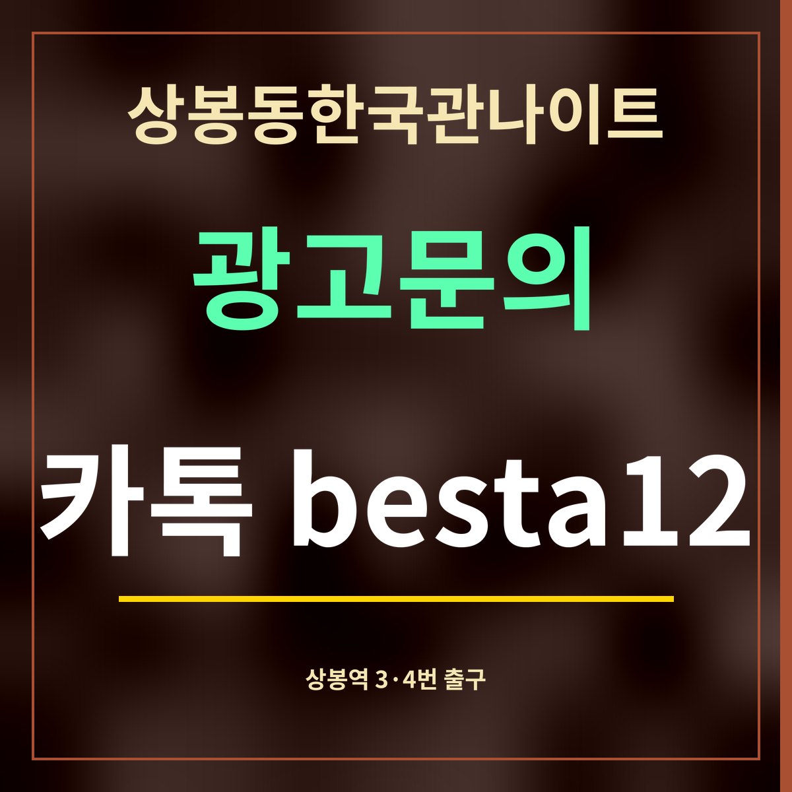

19세 미만 출입 금지
상봉동한국관나이트 상봉역 3·4번 출구 정류장 안내
제휴 없는 정보 안내 · 정류장과 노선은 카카오맵 정류장 정보(2026년 9월 27일), 거리는 가게 좌표에서 잰 직선거리입니다.

바로 답: 상봉역 3번 출구 정류장은 상봉동한국관나이트에서 직선 354m, 4번 출구 정류장은 369m입니다. 두 곳 모두 심야버스 N72가 섭니다. 노선이 가장 많은 곳은 446m 떨어진 상봉역.중랑우체국(중) 정류장입니다.
정류장별 노선
| 정류장(번호) | 거리 | 노선 |
|---|---|---|
| 상봉역3번출구 07-166 | 354m | 262 · 2015 · 2016 · 680 · 1205 · 272 · N72 · 2230 |
| 상봉역4번출구 07-167 | 369m | 262 · 272 · 2015 · 2230 · 680 · 1205 · G1200 · N72 · 2016 |
| 상봉역.중랑우체국(중) 07-003 | 446m | 201 · 241 · 260 · 270 · 2212 · 2311 · 2416 · 165 · 166-1 · 202 · 30 · 51 · 65 · 707 · 1330-2 · 1330-4 · 1330-44 · 8005 · 272 · N26 · 2312A · 2312B · 1330-3 · 6100 |
3번·4번 출구는 서로 마주 봅니다
3번 출구 정류장(07-166)과 4번 출구 정류장(07-167)은 서는 노선이 거의 같습니다. 4번 출구 쪽에만 G1200이 더 있습니다. 가는 방향에 따라 길 건너편 정류장을 고르면 되고, 상봉동한국관나이트까지의 거리는 두 곳 모두 350m 남짓입니다.
이 두 정류장은 가게와 가장 가까운 정류장이 아닙니다. 가장 가까운 정류장은 직선 63m 떨어진 중랑구방정환교육지원센터 정류장(2236번)이라, 버스로 가게에 바로 오려면 그쪽이 낫습니다. 상봉역 3·4번 출구 정류장은 지하철에서 내려 버스로 갈아탈 때 쓰기 좋습니다.
중앙정류장 한 곳 더
상봉역.중랑우체국(중) 정류장(07-003)은 도로 가운데 있는 중앙버스정류장으로, 24개 노선이 섭니다. 심야버스 N26도 이곳에 섭니다.
자주 묻는 것
3번 출구 정류장에는 어떤 버스가 서나요?
262 · 2015 · 2016 · 680 · 1205 · 272 · N72 · 2230이 섭니다.
4번 출구 정류장은요?
262 · 272 · 2015 · 2230 · 680 · 1205 · G1200 · N72 · 2016이 섭니다.
가게까지 얼마나 되나요?
3번 출구 정류장은 직선 354m, 4번 출구 정류장은 369m입니다.
한 줄 정리: 상봉역 3·4번 출구 정류장은 상봉동한국관나이트에서 350m 남짓 — 지하철에서 버스로 갈아탈 때 씁니다.
열차 노선은 가는 노선 정리에 있습니다.